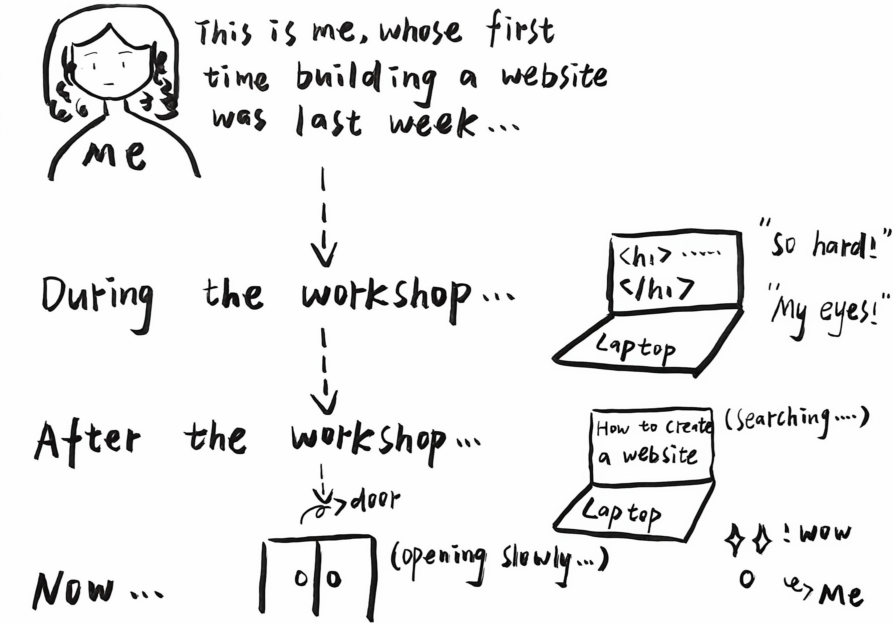

Last week I had my first workshop, and it was also my first time trying web design. It’s a bit difficult for me-I work slowly and sometimes find it quite challenging. But it’s also new and interesting. It feels like a door to a new world is slowly open for me. I’m looking forward to the next workshop!

Last week, we learnt how to scrape data from the Web and collect it for use. Before the workshop, I have touched some skills about web scraping, but just a little, not so familiar.
During the workshop, I followed Chris' steps to scrape data with Web Scraper. First, I downloaded Web Scraper and added it to Google Chrome. Then I open the website(bbc iplayer), a website about tv series. After that, I click 'inspect' and then began collecting data. There are two main ways to collect data— WebScraper and Python programming langguage. I found that Python programming language is so difficult for me that I choose WebScraper to help me finish data collection.
From this, I learned that how to scrape data from the website and organise it into an excel. In particular, I realised that web scraping is really helpful and efficient in data collection.
Back to Home